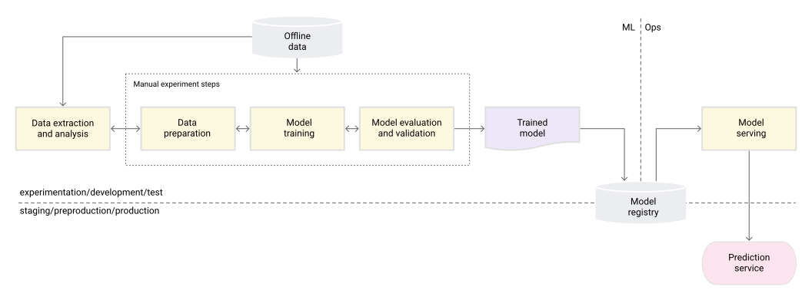
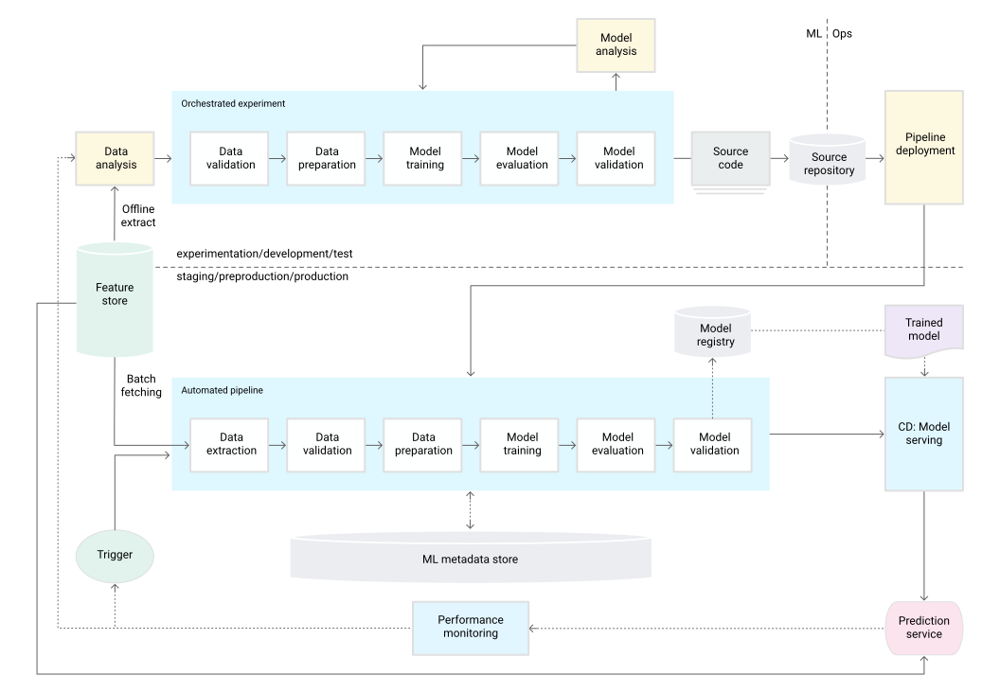
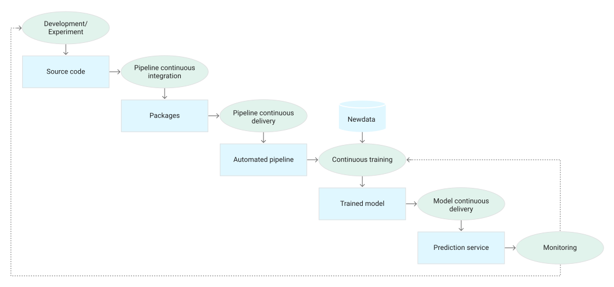

Google distinguishes three kinds of automation. Continuous integration (CI) tests changes to code and components, including their handling of data. Continuous delivery (CD) prepares and deploys a tested change. Continuous training (CT) reruns training as new evidence arrives. One system can have a daily prediction schedule before it has any automated training.
Follow the fitted model through four steps. Evaluation produces measurements on held-out data. Validation compares those results with a baseline and release requirements. Serving makes the approved model available for batch or online predictions. Monitoring observes what happens after release and can prompt another experiment or training run.
A researcher prepares the data, runs experiments and selects a model. Engineers take that artifact and integrate it into the serving system. The next fit requires another handoff. One risk is that feature preparation in the experiment differs from what serving code does on live inputs.

Google Cloud, Figure 2 · Follow the handoff from experimentation to the prediction service.
One deployed pipeline can produce many fitted models
The team deploys the steps that produce a model. Each execution uses the same implementation for preparation, fitting and validation. This is what Google means by experimental–operational symmetry: feature logic tested in an experiment also runs in production.

Google Cloud, Figure 3 · Follow one training run from its trigger through validation to serving.
Start a run
A schedule, newly available labels, deteriorating performance or a deliberate request can trigger training. A change in input distributions can also prompt investigation.
Decide whether to proceed
Check the input schema before fitting. Compare the fitted candidate with the current model on held-out data and important segments. Check compatibility with serving. A failed check can leave the current model in service.
Preserve the evidence
Record input and output artifacts, component versions, parameters, timings, evaluation results and the prior model. Those records let you compare runs, reproduce a result and recover an earlier release.
Share feature definitions
Training and serving need consistent transformations. A feature store is one way to share definitions and retrieve values for both workloads. Google treats it as optional.
Suppose a developer changes how the price model converts hourly wind inputs into quarter-hour features. That edit must reach the deployed training pipeline before the next fit can use it.

Google Cloud, Figure 5 · Follow a code revision through build and deployment, then a training run through model delivery and monitoring.
At integration time, test the revised feature logic on known inputs, check that components produce the expected artifacts, and exercise their connections. Package the tested components. At delivery time, deploy the pipeline to a test environment, exercise its serving interface with representative inputs, and check compatibility, latency and predictive quality before promotion. Teams can retain a manual production approval.
After deployment, fresh labels can run this version repeatedly. A particular run produces a fitted model; the approved model can in turn issue many forecasts. That last distinction matters for the morning auction revisions below.
Google Cloud, Figure 4 · Locate source control, build and deployment services alongside the training and serving components.
Reading adapted from Google Cloud’s MLOps guide (reviewed August 2024). Figures 2–5 reproduced from the guide under CC BY 4.0. Forecasting applications below draw on the cited studies and project evidence.
Model fitting and forecast issuing have separate triggers
Kpler describes daily retraining and morning revisions around 10:36 and 11:16 CET as early auction results arrive. Both editions predict the same day-ahead auction. An intraday auction forecast targets a different clearing price; a continuous-market index also needs a defined trade window and truth version.
Apply Figure 3 to a price service
Settled observations
Train on the newly labelled history → save a candidate model.
Validation passes
Promote the candidate → record the approved model version.
Early auction result
Run the approved model on fresh inputs → publish a forecast edition.
The weather provider is the producer; the component that receives its files is the collector. The price service in turn produces an edition for the trader. These roles explain which timestamps each system can actually observe.
Timestamp vocabulary for one input and one output
Reference / valid time
The weather model cycle’s starting time / the time its prediction describes.
Publication / receipt
When the provider released the input / when the collector received it. If validation delays use, also record when the required fields became usable.
Issue / availability
When the price service issued the edition / when the customer could retrieve it.
Delivery interval
The period of physical electricity delivery priced by the forecast.
In DeepMind’s example, at 21:00 UTC the forecast for midnight must use the 12:00 cycle at a 12-hour lead, given an assumed six-hour publication delay. Kpler illustrates the corresponding storage choice: its API can retrieve historical vintages, while FTP overwrites earlier morning editions.
The wiki reconstructed Eiser’s Energy-Arena submissions for 2–8 October 2026. The two comparisons use identical German delivery quarters and SMARD prices. The later edition could incorporate an intervening auction.
Weighted interval score · lower is better
Edition available by
Quarters
WIS (€/MWh)
11:00
672
11.44
Noon
672
7.16
Use 11.44 as the comparison for an 11:00 service over that week. To attribute a gain to the model, give old and new models identical input editions, issue dates and truth. ECMWF used separate scorecards for the complete release and for model versions run with common initial conditions.
Across 26,204 quarter-hours, the project replay improved WIS from 19.43 to 16.34. Yet the candidate’s nominal 95% interval covered only 63.7% of observed prices. Both are evaluation results. If a trader uses the interval to size risk, the validation decision is to withhold the 95% claim, inspect misses on each side by horizon, and verify recalibration on subsequent issues.
For a fleet forecast, the relevant quantity changes again. GenCast converted wind speed to power and summed sites within each simulated weather trajectory before evaluating the regional distribution. That retains the dependence between sites exposed to the same weather.
MetDesk reported roughly five minutes for one deterministic weather forecast and a further forty for its ensemble. Its clock starts when ECMWF analysis reaches its machines. Upstream waiting has already consumed part of the trader’s time budget.
Acceptance test. Delay a required feed, then retrieve the forecast through the normal customer interface at the deadline. Record which edition is visible, its age, and whether it is a fallback. Count on-time issues across all expected issues. Once prices settle, score the editions customers actually received, including fallbacks, and report missed issues separately.